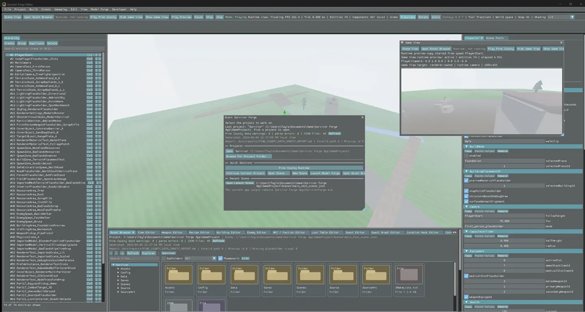

Survivor Forge
A 3D game engine and editor written from scratch in C++20, to understand a survival game all the way down. One editor opens any game project, the way Unity and Unreal do.

01 · The order
What it is.
My second shot at the game that became Multi-Apocalypse, this time starting with the engine.
The engine and editor are one fixed tool. You create or open a project, and each project lives in its own folder and compiles its own C++ gameplay into a module the editor loads while it's running. You can play the game inside the editor, or package it into a standalone player.
02 · Prep
Built in five parts.
- Foundation: the engine, runtime, editor and test targets.
- Editor and runtime: a scene viewport, hierarchy, inspector, asset browser, console, profiler, save and load, and play controls.
- Gameplay systems: physics, world chunks with day, night and weather, damage, inventory, weapons with parts and recipes, and building.
- Before a real game: enemy AI driven by data files, versioned saves, serialisable player commands and an audio interface.
- Asset pipeline: Blender for source art, glTF for what the engine imports.
C++20 · Vulkan · SDL3 · EnTT · Jolt Physics · Dear ImGui · Lua · CMake · vcpkg
03 · The cook
The hard parts.
- Pulling the game out of the engine. The first build had a demo game baked into it. I separated them, so the editor is a fixed tool and every game is its own project behind a stable interface. That is what lets you press Play, pause, and edit the live world.
- A simulation that replays exactly. A deterministic 60 Hz simulation on an entity-component system, with seeded randomness and versioned save snapshots.
- A renderer from nothing. Vulkan with physically based materials, HDR, cascaded and point-light shadows, image-based lighting and screen-space reflections.
- The rest of an engine. Jolt physics for characters, vehicles, ragdolls and cloth, Lua scripting, and LAN co-op with client prediction.
- Tested on every push. CI builds the engine and runs its tests on every push, and the editor checks that need a graphics card run locally.
04 · On the pass
Stopped as a prototype.
Survivor Forge works, but the sample scenes use placeholder art and the editor's workflow was never polished. The source is private. Multi-Apocalypse moved to Unity, and what I learned here went with it.